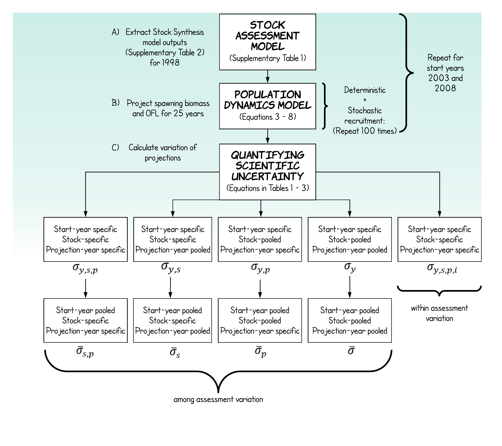

Project summary:
Probability-based harvest control rules can incorporate scientific uncertainty and fishery manager risk tolerance to set catch limits. A buffer that scales with scientific uncertainty is used to calculate the acceptable biological catch from the overfishing limit for some US West Coast stocks. A previous analysis formed the basis for determining the uncertainty component of the harvest control rule using estimates of historical spawning biomass. We developed a new approach that calculates uncertainty directly from projections of biomass and overfishing limits.
Status: Published
GitHub: SigmaOFL
Keywords: Simulation; catch limits; harvest control rules
Key definitions:
- Overfishing limit (OFL) is a catch level that corresponds to the stock or stock complex’s maximum sustainable yield.
- Acceptable biological catch (ABC) is a level of a stock or stock complex’s annual catch that accounts for the scientific uncertainty in the estimate of OFL and any other scientific uncertainty and should be species based on the ABC control rule.
- ABC control rule is a specified approach to setting the ABC for a stock or stock complex as a function of the scientific uncertainty in the estimate of OFL and any other scientific uncertainty.
